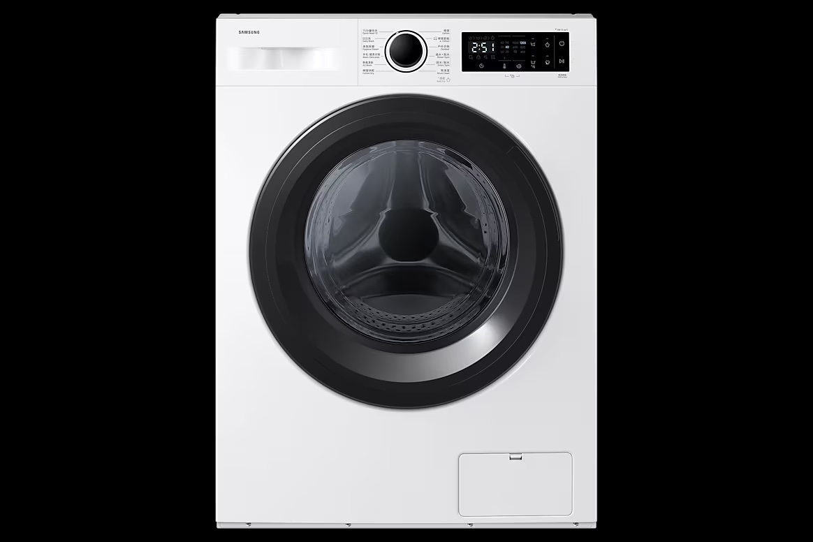
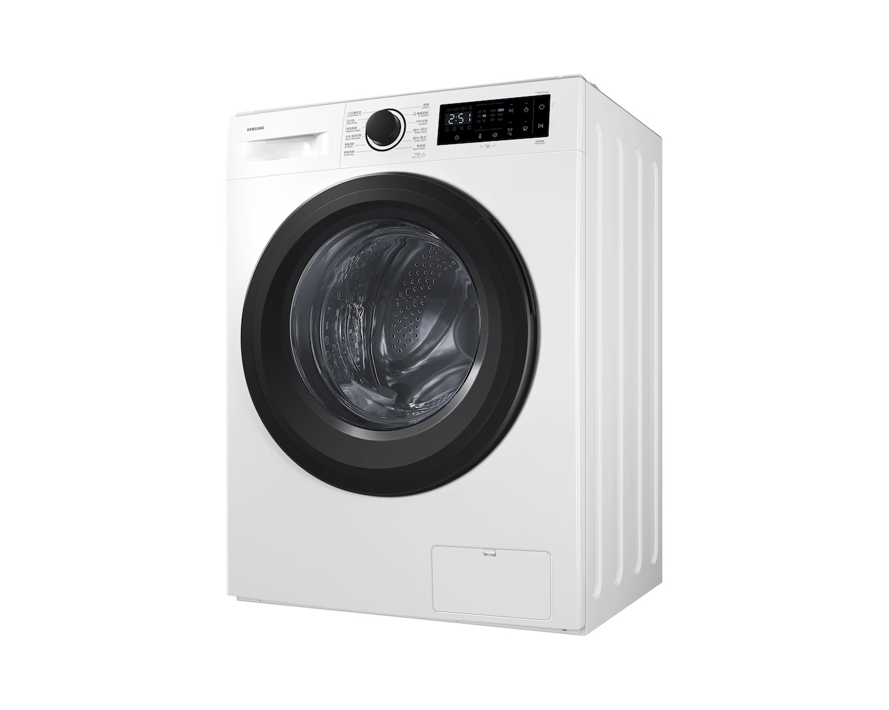

純白機身搭配流線型面板，不論放置於陽台或室內空間，都能與您的家居裝潢完美融合，展現純粹的居家美學。

先進的變頻馬達技術，大幅降低運轉噪音與震動。即使在夜間洗衣，也不會打擾家人的安穩睡眠，同時為您節省每一度電。
是的！820 變頻前置式洗衣乾衣機具備洗脫烘一體功能，讓您在潮濕的陰雨天也能輕鬆擁有乾爽舒適的衣物。
變頻馬達能根據洗滌重量與行程自動調整轉速，不僅運轉更平穩安靜，還能有效減少能源與水量的消耗，延長機器壽命。
本產品採用薄型化機身設計，側邊深度大幅縮減，非常適合都會區公寓或空間較小的陽台安裝。